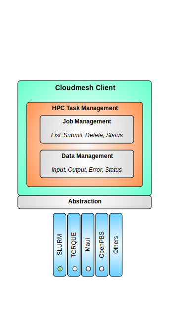
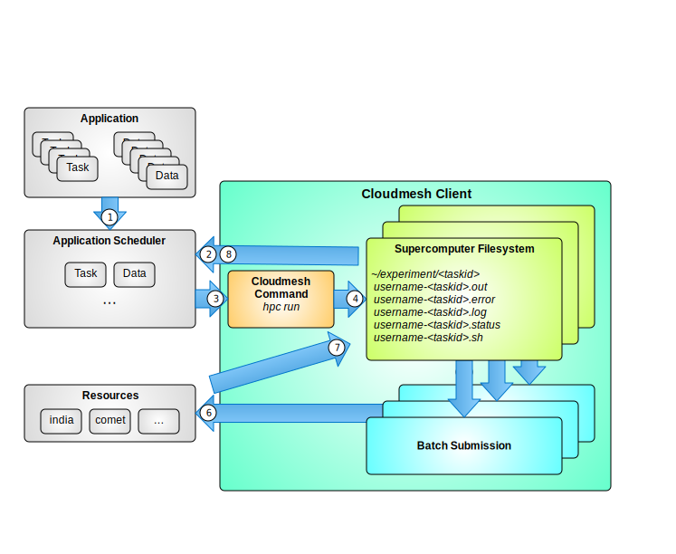

Hpc Command¶
High Performance Computing(HPC) allows to solve large complex problems in engineering, science and business using applications that require very high compute power and amplified bandwidth. The cloudmesh hpc command helps to easily manage hpc clusters.
The manual page of the hpc command can be found at: Hpc
Before we get started, we can set the default hpc cluster or use the –cluster option. To set the default hpc cluster:
$ cm default cluster=comet
set in defaults cluster=comet. ok.
hpc info¶
Returns the state of partitions and nodes on the hpc cluster:
$ cm hpc info
+---------+-----------+-------+------------+-------+-------+----------------------------+---------------------+
| cluster | partition | avail | timelimit | nodes | state | nodelist | updated |
+---------+-----------+-------+------------+-------+-------+----------------------------+---------------------+
| india | xxxxx | up | 3-00:00:00 | 8 | idle | b[009-016] | 2015-11-29 16:06:25 |
| india | yyyyy | up | 3-00:00:00 | 12 | idle | d[001-012] | 2015-11-29 16:06:25 |
| india | zzzzz | up | 3-00:00:00 | 16 | idle | i[81-84,86-89,91-95,97-99] | 2015-11-29 16:06:25 |
+---------+-----------+-------+------------+-------+-------+----------------------------+---------------------+
hpc queue¶
Reports the state of jobs or job sets:
$ cm hpc queue
+---------+---------+--------------+-------------------+-----------+----+------------+-------+---------------------+---------------------+
| cluster | jobid | partition | name | user | st | time | nodes | nodelist | updated |
+---------+---------+--------------+-------------------+-----------+----+------------+-------+---------------------+---------------------+
| india | 1205397 | gpu-shared | xxx | x_user | PD | 0:00 | 1 | | 2015-11-29 16:16:27 |
| india | 1267689 | compute | yyy | y_user | PD | 0:00 | 1 | | 2015-11-29 16:16:27 |
| india | 1267690 | compute | zzz | y_user | PD | 0:00 | 8 | | 2015-11-29 16:16:27 |
| india | 1267691 | compute | lll | y_user | PD | 0:00 | 3 | | 2015-11-29 16:16:27 |
| india | 1267693 | compute | mmm | y_user | PD | 0:00 | 1 | | 2015-11-29 16:16:27 |
| india | 1295159 | gpu | nnnnnnn | z_user | CG | 1-00:00:03 | 1 | xxxxx-30-13 | 2015-11-29 16:16:27 |
| india | 1304301 | compute | ooooooooooo | y_user | R | 23:38:55 | 8 | yy-04-[20-21,63-68] | 2015-11-29 16:16:27 |
+---------+---------+--------------+--------------------+-----------+----+------------+-------+--------------------+---------------------+
To view the state of a specific job, use the –job=NAME option, where NAME can be the job id or the job name
$ cm hpc queue --job=6
+---------+-------+-----------+-------------+-----------+----+------+-------+----------+---------------------+
| cluster | jobid | partition | name | user | st | time | nodes | nodelist | updated |
+---------+-------+-----------+-------------+-----------+----+------+-------+----------+---------------------+
| india | 6 | xxxxx | somethin.sh | xxxxxxxxx | PD | 0:00 | 1 | | 2015-11-29 16:24:15 |
+---------+-------+-----------+-------------+-----------+----+------+-------+----------+---------------------+
hpc status¶
Similar to hpc queue where the status of job(s) can be viewed.
Experiment management¶
Often it is the case that you may want to rerun your script multiple times with potentially different parameters. We are working towards simplifying this mechanism for parameter studies. At this time we implemented the ability to run a simple shell command repeatedly.
For this we provide a simple experiment abstraction. An experiment is created automatically once you run an hpc command. The experiment is placed in an output directory that can be defined within the cloudmesh.yaml file. By default it will be the home directory ~/experiment. In this experiment we create numbered sub directories for consecutive execution of the experiment run.
To run an experiment (in this case just a shell command uname) you can use the run command:
hpc run uname –cluster=india
- It will create on the cluster india a new experiment directory by
- increasing an experiment number, put the batch script, run the command, and put the output into this directory.
One can also transfer a script for the experiment, for example:
hpc run <script_path> –cluster=india
To list experiments that have been previously run you can use the command:
hpc run list
To list the files in a particular experiment you can use the experiment number:
hpc run list 11
Now you will see what the experiment script has created and you will be able to fr example view the output of the script:
hpc run output 11
To delete an experiment you can say:
hpc run rm 11
However, be careful as deleting it will permanently delete the file. To delete all experiments (be extra careful) you can just omit the number:
hpc run rm
In future we will provide the ability to add custom scripts.
hpc delete¶
If for any reason, you need to kill a job that you have submitted, use the delete command with the job name or the job id:
$ hpc delete --job=1463
Job 1463 killed successfully
To delete all jobs from a group:
$ hpc delete all
All jobs for group test killed successfully
The above command will delete all active jobs from the default group. You can also use the –group to specify a group of your choice.